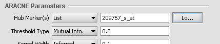

ARACNE
ARACNE (Algorithm for the Reconstruction of Accurate Cellular
Networks) is an information-theoretic algorithm used to identify
transcriptional interactions between gene products using microarray
expression profile data. The resulting network is displayed using the
Cytoscape component. ARACNE can be used to predict potential functional
associations among genes, or to predict novel functions for
uncharacterized genes, by identifying statistical dependencies between
genes. The results take the form of a matrix of candidate interactions,
also called an adjacency matrix, which can be used for further network
visualization and analysis.
ARACNE can perform two separate calculations:
1. Mutual Information: The mutual information (MI) of one or more marker's expression profile(s) is calculated against all other active markers.
2. Data Processing Inequality (DPI): The DPI calculation
(triangle inequality) is used to remove the weakest interaction (edge)
between any three markers. That is, if a MI value is available between
each of three possible pairings of three markers, the weakest
interaction of the three will be removed from the output. This has the
intent of removing indirect interactions. For example, if
A->B->C, the interaction A->C is indirect and would be
removed.
Parameters described below allow one to incorporate a list of
putative transcription factors and optimize the run to discover targets
that they may regulate.
Run ARACNE
1. Load or select a microarray data set, or select an existing adjacency matrix in the project folders area of geWorkbench.
2. In the analysis pane (lower right), select ARACNE analysis from the analysis list.
3. Populate the parameters used for this analysis method.
4. Select the location to run the analysis (local or Grid) in the service sub-tab.
5. Click on Analyze. If successful, the resulting
adjancency matrix is added to the Project Folders component as a child
of its parent dataset. The Dataset history captures the analysis
parameters.
Parameters

- Hub Marker(s): Specifies which gene markers will be included in the the ARACNE mutual information (MI) calculation.
- "All vs All" comparison computes the mutual information for each marker's gene expression profile against all others,
- "List" compares the members of a user-entered list of marker
expression profiles (these being called "Hub Markers") against all
other expression profiles in the datast. A comma-separated list of
marker IDs can be typed directly into the component, or the list can be
loaded from a CSV file by clicking Load.

- Threshold Type: This drop-down specifies the type of
threshold to be used and can take the values “Mutual Info” or
“P-value”. The actual value entered into the adjacent text area is
always a number between 0 and 1.
- Kernel width: The kernel width used for the computation
of the MI values. The Kernel width is a scaling parameter used when
fitting a Gaussian function to the data. This can be either inferred by
the application (select Inferred) or entered explicitly by the user
(select Specify).
- DPI Tolerance - The Data Processing Inequality
(triangle inequality)can be used to remove the effects of indirect
interactions, e.g. if TF1->TF2->Target, DPI can be used to remove
the indirect action of TF1 on the target. Stated another way, the DPI
can be used to remove the weakest interaction of those between any
three markers. The DPI tolerance specifies the degree of sampling error
to be accepted, as with a finite sample size an exact value MI can not
be calculated.
- If the “Do Not Apply” option is specified, no DPI is applied.
- If the “Apply” option is selected then the DPI is applied and
the value (between 0 and 1) in the associated text box is used to
determine the stringency level of the DPI application.
- DPI Target List - The DPI target list can be used to
limit the ARACNE calculation to transcriptional networks. It is used to
screen out spurious regulatory interaction signals of genes that are
tightly coexpressed but are not in a regulatory relationship to each
other, for example genes for two proteins that are in a physical
complex and hence always produced in the same amounts. A
comma-separated list can be typed in, or it can be loaded from an
external file. If used, the DPI Target List should contain all markers
that are annotated as transcription factors. Signaling proteins could
also be included.
- Details: If the box is checked, the user selects and loads a
file which specifies markers (which should be a list of one or more
presumptive transcription factors) which will be given preferential
treatment during the DPI edge-removal step. Edges originating from
markers on this list will not be removed by edges originating from
markers not on this list. However, for DPI calculations where all three
markers are members of the list, the weakest connecting edge may still
be removed.
- All Markers: checking this box overrides any activated
set markers in the Markers component for inclusion in the pairwise MI
calculations. If a marker set is activated, only the markers in the set
will be used. In addition, if NO marker sets are activated, all markers
will be used.
- All Arrays: checking this box overrides any activated
set arrays in the Arrays/Phenotypes component for inclusion in the MI
calculations. If an array set is activated, only those arrays will be
used. In addition, if NO array sets are activated, all arrays will be
used.
Bootstrapping
Bootstrap analysis can be used to generate a more reliable estimate of
statistical significance for the interactions. Please see Margolin et
al. 2006, Nature Protocols, Vol 1, No. 2, pg. 663-672 for further
details (full reference below). Briefly, repeated runs of ARACNE are
made, with arrays drawn at random from the full dataset with
replacement. The same number of arrays is drawn each time as is present
in the original dataset. A permutation test is then used to obtain a
null distribution, against which the statistical significance of
support for each network edge connection (interaction) can be measured.
- Bootstrap number: Specifies the number of bootstrapping runs to perform.
- Consensus threshold (for bootstrapping only): After
the bootstrapping runs are made, a permutation test is used to estimate
the significance of interactions. The consensus threshold sets the
cutoff point for calling the interactions significant and returning
them in the final adjancency matrix
View Arance
ARACNE produces as output an adjacency matrix. This contains the MI
score for each pair of expression profiles compared. The Cytoscape
component can be used to visualize and further manipulate the inferred
connectivity data, included selecting sets of interesting genes and
returning them to the Markers component as a new set. A description of
Cystoscape is located in the Cytoscape Tutorial and Help.

Selecting markers back into the Markers component in Cytoscape:
Using the mouse, left click and draw a box around markers of
interest in the Cytoscape display. The enclosed markers will be
highlighted in yellow.

The highlighted markers will also be returned to the Markers component as follows:
1. By default, the highlighted markers are returned to the default "Selection" set.
2. Alternatively, any existing set can be "tagged" by
right-clicking on it and selecting "Tag for visualization". Any markers
highlighted in Cytoscape will now be returned to the "tagged" set.
References
Margolin, A., Wang, K., Lim, W.K., Kustagi, M., Nemenman, I., and
Califano, A. Reverse Engineering Cellular Networks. Nature Protocols
(2006), Vol 1, No. 2, pgs. 663-672


{kind=link}